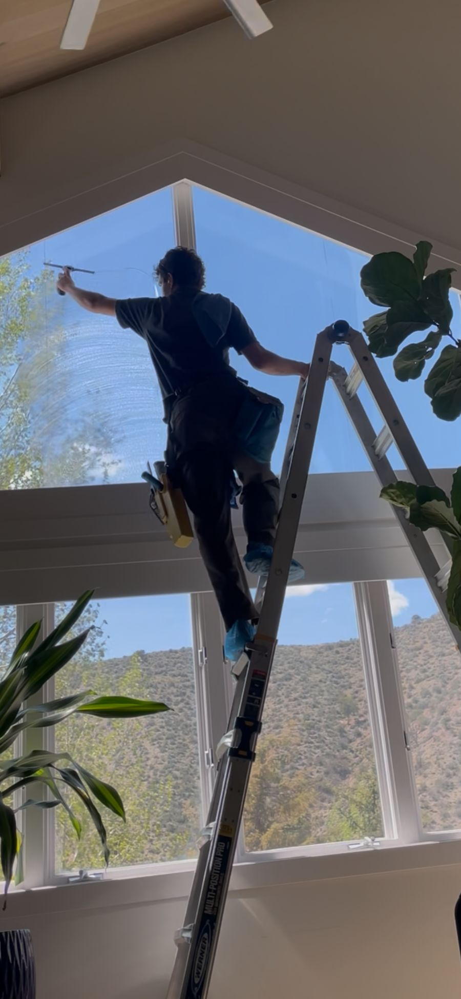
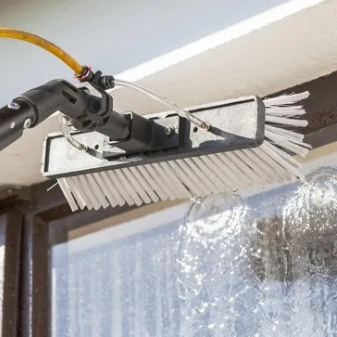
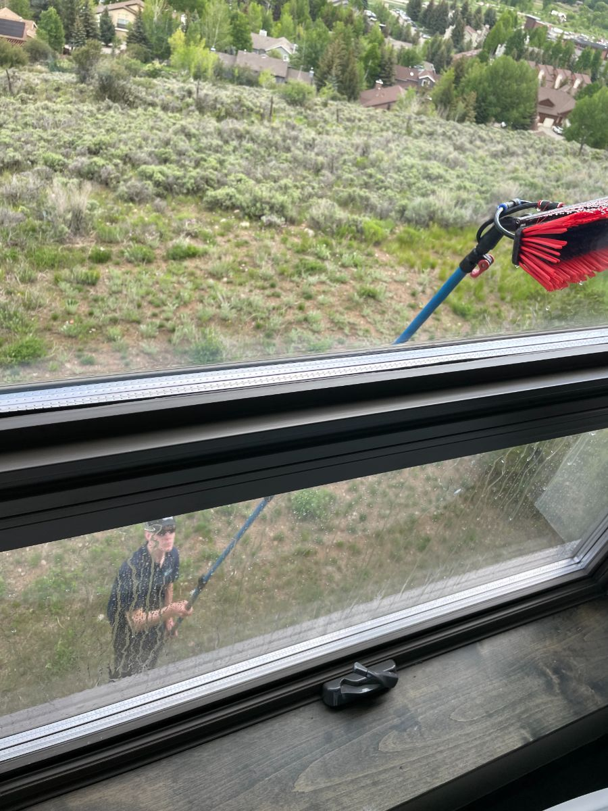
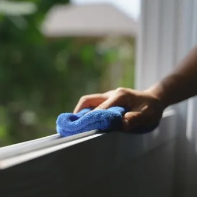

Dirty windows?
We can fix that!
Proudly serving Eagle County, with unmatched quality and care.
Get a QuoteFully insured to $1MM · 23 Google reviews · Free quotes within 24 hours
Our Defining Traits
Quick & easy quotes
We offer free quotes on all jobs. Call or text and we will provide you with a fair quote within 24 hours and schedule a time to visit, as well as explain our various cleaning options.
We're insured!
No need to worry! We are covered up to $1MM per occurrence plus full auto insurance.
Respect your property
The "leave it better than you found it" principle is what we live by. The finer details are most important to us such as covering shoes when we enter your home, wiping all window sills, as well as mindfulness when it comes placing ladders and stools.
We're reliable
We understand that time is one of the most valuable assets in life. Instead of a vague time frame, we will provide a fixed start and end time to ensure efficiency. If you feel dissatisfied with our service at any point we will return to the job to personally make things right.

Our Process

Pure water cleaning
Here at PureSight, we use industry leading technology to leave your windows sparkling. We scrub down your windows and then rinse them using de-ionized water so that harmful chemicals do not come in contact with your windows or paint while leaving your windows spotless.

Long Lasting Clean Windows
At Puresight, we put in the extra time to wash the dirt off of the frames of the window to ensure the windows stay clean longer. Because the water is filtered down to 0 parts per million, we leave no streaks, spots, or minerals on the windows.

100% CUSTOMER SATISFACTION
Here at Puresight, we want our customers to be happy. This is why we walk around the job site when it is complete to make sure the place looks amazing. If the job falls short of your expectations, we'll come back and fix it.
See what your neighbors are saying
Frequently Asked Questions
How much does window cleaning cost?
It depends on your home's size, number of stories, and how many windows you have. Every quote is free — call, text, or send the form and we'll get you a price within 24 hours.
Are you insured?
Yes. We're covered up to $1MM per occurrence, plus full auto insurance.
What is pure water cleaning?
We scrub your windows and rinse them with de-ionized water filtered to 0 parts per million. No chemicals touch your glass or paint, and with no soap residue left behind, windows stay clean longer.
Do I need to be home?
Not for exterior-only cleanings — we can take care of everything while you're out. For interior windows we just need someone there to let us in.
How often should I have my windows cleaned?
Most Eagle County homes do well with twice a year — once in spring after mud season and once in fall before the snow. Second homes and rentals often add a mid-summer cleaning.
Which areas do you serve?
All of Eagle County: Vail, Minturn, Avon, Edwards, Wolcott, Eagle, and Gypsum — see our Service Areas page for the full list of neighborhoods.
Get a Quote
Schedule an Appointment
To set up a window service consultation, please contact us at your convenience. We look forward to meeting you soon.
Puresight Window Cleaning
iker@puresightwc.com
970-306-7489
Hours
Monday - Saturday: 8AM-5PM
Sunday: Closed